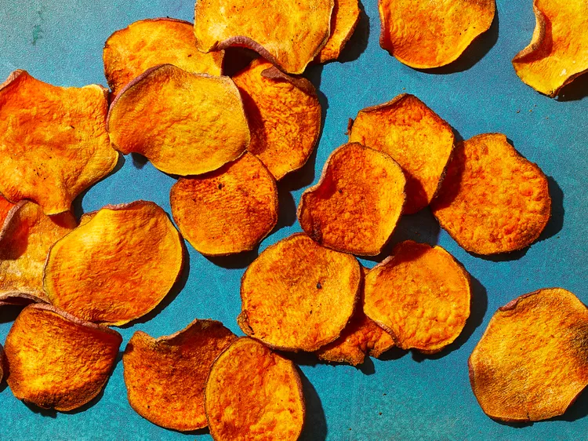

Use your air fryer to make these yummy sweet potato chips. After much experimenting I found that the best chips came from a mandoline that was set just a hair thicker than 1/16 inch (about 3/32 inch thick).
Step 1
Slice potato into 1/16-inch-thick rounds using a mandoline. Put potato slices in a large bowl of cold water; soak about 20 minutes. Drain and pat dry with paper towels. Wipe out bowl.
Step 2
Return potato slices to dried bowl. Add oil, salt, and pepper; toss gently to coat.
Step 3
Preheat air fryer to 350 degrees F (175 degrees C). Lightly coat air fryer basket with cooking spray. Working in batches if needed, arrange potato slices in an even layer in basket (do not overcrowd).
Step 4
Cook until lightly golden and crispy, 12 to 16 minutes, turning and rearranging chips into an even layer every 4 minutes. Watch closely during the last 2 to 3 minutes of cooking. Check chips about every 30 seconds, using tongs to remove golden chips from the basket as needed to avoid overcooking and ending up with bitter chips.
Step 5
Let chips cool about 5 minutes. Chips will continue to crisp as they cool.Store in an airtight container up to 3 days.